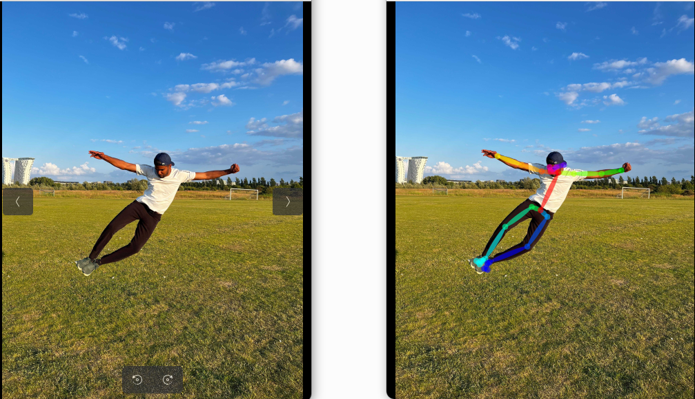

Click above to view the demo video

Author: Darshan K T
Deep learning applications like OpenPose are heavily GPU-dependent due to the massive parallel computations they require. But what if you want to run such applications on lightweight edge devices or non-GPU machines? This is where GPU Virtualization comes into play. In this article, we explore what GPU virtualization is, why it is needed, how the GVirtuS framework makes it possible, and finally, how you can run OpenPose virtually using GVirtuS in real-time.
Modern AI applications demand immense computational power. CPUs, though powerful for general-purpose tasks, fall short when it comes to handling the highly parallel workloads of neural networks, image processing, and deep learning pipelines. GPUs, with their parallel architecture, are the go-to hardware for such workloads.
However, not every device has a dedicated GPU. Edge devices, laptops, and small servers often lack the GPU horsepower needed to run GPU-rich applications. Buying multiple GPU machines for distributed environments is also costly.
GPU Virtualization bridges this gap. It allows a non-GPU device to “borrow” GPU resources from a remote GPU-enabled server. By virtualizing the GPU, we make high-performance computing available to lightweight devices—unlocking flexibility, cost efficiency, and scalability in AI deployments.
GVirtuS is an open-source GPU virtualization software that enables applications built with CUDA Toolkit v12.6+ to efficiently leverage GPU acceleration remotely. It provides partial or full virtualization for key CUDA libraries, including cuDNN, cuFFT, cuBLAS, cuSPARSE, and cuSOLVER.
GVirtuS follows a split-driver model, meaning the workload is separated between a non-GPU frontend and a GPU backend.
OpenPose is one of the most popular human pose estimation frameworks. It detects body, hand, and facial keypoints from images and videos in real-time.
Under the hood, OpenPose uses the Caffe deep learning library, which is highly optimized for GPU execution. Since OpenPose involves processing high-resolution images, extracting features through deep convolutional networks, and running inference for multiple keypoints per frame, it becomes an extremely GPU-intensive application.
Running OpenPose on a CPU-only machine leads to slow performance, making real-time pose estimation nearly impossible. This is where GVirtuS becomes invaluable.
GVirtuS virtualizes CUDA calls by splitting them between frontend and backend. Here’s how it works for OpenPose:
Let’s walk through the real-time execution of OpenPose with GVirtuS.
git clone https://github.com/ecn-aau/GVirtuS.git
cd GVirtuSmake run-gvirtus-backend-devThis launches the GVirtuS backend process on the GPU-enabled server.
make run-openpose-test
This command triggers a Docker container, the 00_test.cpp script, and executes OpenPose with GPU virtualization.
The results are displayed directly on the frontend (non-GPU device).
GPU Virtualization is transforming how we deploy deep learning applications, making GPU acceleration accessible from almost any device. By using GVirtuS, we can unlock GPU resources across distributed environments and enable GPU-intensive frameworks like OpenPose to run even on lightweight edge devices.
For more setup instructions, check my previous guide: 👉 GVirtuS + OpenPose Integration
This work has been funded by the Clever Project. Special thanks to Associate Professor Sokol Kosta for his guidance and support.
Click above to view the demo video
Author: Darshan K T